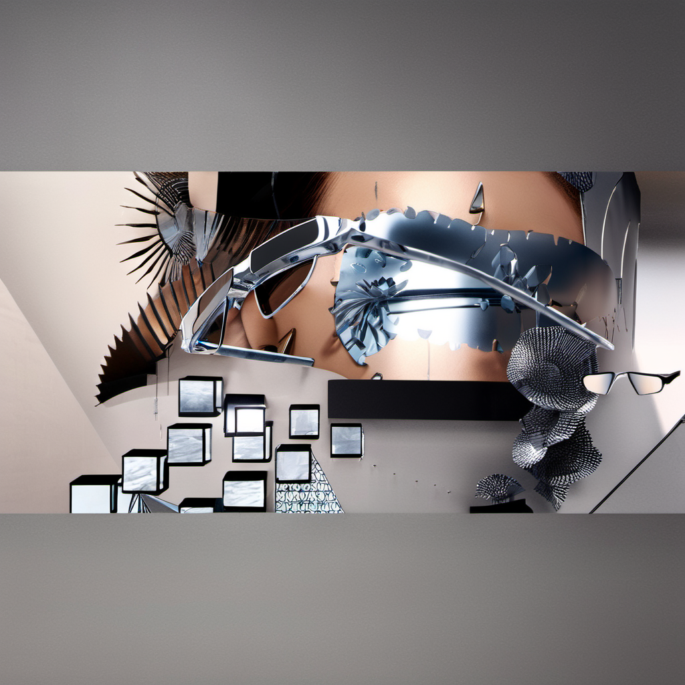

Pipeline Overlay
Gentle Monster SG — complete depth-to-image decomposition with overlay-compatible analysis passes. Each layer shares identical resolution and camera perspective, making them pixel-aligned for compositing.


Depth Map (16-bit Cycles)
World-Space Normals
Object-ID (21 colors)
Blender 5.1→
Cycles Depth→
EXR → 16-bit PNG→
Pad to Square→
ComfyUI /upload/image→
ControlNet Depth→
SDXL KSampler→
Editorial Output
Input & Output
SDXL Generation

How This Maps
The depth map (2048×1024, 2:1) is padded with black bars to 2048×2048 before uploading to ComfyUI.
SDXL generates at 1024×1024. The scene occupies the center strip
In Photoshop: open the beauty render → extend canvas to square (center anchor) → SDXL output overlays perfectly.
Square Mapping Concept
Beauty Render
2048×1024
16:9 aspect
→
Canvas Extended
2048×2048
center anchor
→
SDXL Overlay
2048×2048
pixel-aligned
Technique
Scene
gentle monster.blend — 39 objects, 21 meshes, 4 lights, Cycles engine. Camera.001: 50mm perspective. FFMPEG movie format (handled via compositor EXR fallback).
EEVEE Analysis Passes
Alpha beauty (transparent bg) + Object-ID (21 random-color emission shaders) + World-space normals (XYZ→RGB remap). All at 2048×1024, scene aspect preserved.
Depth Map
Cycles 5 samples. Compositor: Z-Pass → Normalize → Invert → FileOutput (EXR). EXR → 16-bit PNG via OpenEXR + Pillow. Camera sensor_fit forced to HORIZONTAL for predictable aspect.
SDXL Pipeline
Depth map padded to square → ComfyUI /upload/image → ControlNet Depth SDXL (strength 0.85) → KSampler (dpmpp_2m karras, CFG 7.0, 20 steps) → 1024×1024 output. MPS generation ~3.3 min.
Overlay Compatibility
All analysis passes share identical resolution (2048×1024), camera perspective, and sensor_fit (HORIZONTAL). This guarantees pixel (x,y) in any layer maps to the same 3D point in the scene.
FFMPEG Edge Case
Blender 5.1 movie-format scenes lock file_format to FFMPEG and restrict FileOutput to EXR only. Pipeline uses compositor EXR→PNG conversion to handle this transparently.